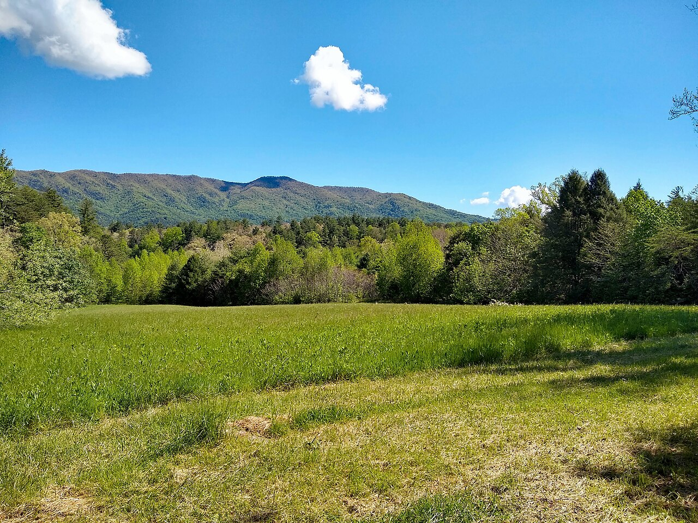

Great Smoky Mountains from Gatlinburg · 5-day family itinerary
Five days based in Gatlinburg, Tennessee, flying in and out of Knoxville, for a nine-year-old and a six-year-old. The parking tag is bought on the first afternoon, the high and wet walks happen in the morning, and every picnic ends with the table, the grill and the ground cleared for the bears.

Photo: P. Hughes, Cades Cove - view from loop road, CC BY-SA 4.0, via Wikimedia Commons.

Checked before you commit
This illustrative route flies into McGhee Tyson Airport near Knoxville, stays in Gatlinburg and flies home from the same airport. National Park Service pages for Great Smoky Mountains National Park (directions, fees and parking tags, the FAQ, Cades Cove and its vehicle-free days, seasonal roads and facilities, closures and trail conditions, Roaring Fork, Kuwohi, Grotto Falls, picnic areas, black bears, elk, wildlife viewing, weather, accessibility, hiking safety and water safety) were read on 12 November 2026. Nothing was booked.
One base and one airport. The National Park Service (NPS) puts McGhee Tyson Airport about 45 miles (72 km) west of the park’s Gatlinburg entrance, and says there is no public transport to the park from nearby cities, so this plan uses a hire car. NPS says travel speeds on most paved park roads average 35 mph (56 km/h). It gives no drive times from Gatlinburg to Cades Cove or Kuwohi, and we didn’t measure them.
One anchor each morning and a quieter afternoon. The longest planned walk is Grotto Falls, 2.6 miles (4.2 km) return. The Kuwohi tower path is a mile (1.6 km) return, but NPS calls it very steep. NPS says summer afternoon showers and thunderstorms are common, so the high and wet stops come first.
We didn’t check accommodation, car hire, flights, shuttles or the Cades Cove bike rental. Parking tag prices are what the NPS fees page showed on 12 November 2026. A booking-hub link is intent only. It doesn’t hold a room, a car or a parking space.
Planning boundary: dates are illustrative; the worked example runs Monday 12 to Friday 16 July 2027, five days counted from the flight in to the flight home. NPS says July and August afternoon highs reach the 90s °F (about 32 to 37 °C) in the lower elevations, and that Kuwohi can be 10 to 20 °F (about 6 to 11 °C) cooler than the surrounding lowlands.
The seasonal dates here are the ones NPS listed for 2026: Cades Cove Loop Road closed to vehicles on Wednesdays from 6 May to 30 September, Kuwohi Road open 1 April to 29 November and Roaring Fork 17 April to 29 November. Check the 2027 dates before you commit. On 12 November 2026 NPS listed Laurel Falls Trail as closed, expecting it to reopen sometime in 2027, and Mingus Mill as closed. Alfred doesn’t check park closures or parking tags. A booking-hub link doesn’t prove a booking.
Route and family-coordination brief
Party: two adults, one nine-year-old and one six-year-old, Australian residents. Base: Gatlinburg, Tennessee, next to Sugarlands, which NPS calls the park’s northern gateway. Pace: gentle, a morning in the park and a quieter afternoon. Assumption: a hire car, because NPS says there is no public transport to the park from nearby cities.
Getting there: NPS says the nearest major airport in Tennessee is McGhee Tyson Airport (TYS) in Alcoa, just south of Knoxville, about 45 miles from the Gatlinburg entrance. Its directions follow US-441 through Sevierville and Pigeon Forge into the park. We didn’t check flights, connections, fares or the drive time.
Parking tag rule: entry to the park is free, but NPS requires a parking tag on any vehicle parked in the park for more than 15 minutes: US$5 a day, US$15 a week or US$40 a year. The tag must show the licence plate of the car it is in, must be displayed as a physical tag (digital copies aren’t accepted), and can’t be refunded or transferred. Because a hire car’s plate is unknown until pick-up, this plan buys one weekly tag in person at Sugarlands Visitor Center on Day 1. NPS says most trailheads have no tag machines, and America the Beautiful passes aren’t accepted instead of a tag.
Bear rule: NPS says willfully approaching within 50 yards (150 feet, about 46 m) of a bear, or any distance that disturbs it, is illegal in the park; for elk the distance is 25 yards (about 23 m). Never leave food or rubbish unattended, use the bear-proof bins or take rubbish with you, and lock the car: NPS says bears can open car doors. After every picnic, clean the table, the grill and the ground around it.
Signal and water rule: NPS says cell coverage in the park is extremely limited and mostly non-existent. Download the offline park map in the NPS app and pick up a paper map at a visitor centre, and leave your route and return time with someone outside the park. Its hiking safety page suggests at least a litre of water for every two hours of walking. There are no petrol stations, hotels or restaurants inside the park.
Left out: Laurel Falls Trail (closed on 12 November 2026); Abrams Falls (NPS gives a 5-mile, 8 km, hike and strongly discourages swimming there); Rainbow Falls (5.4 miles return, which NPS calls moderately strenuous); Mingus Mill (closed); swimming and tubing, which NPS doesn’t recommend anywhere in the park, which has no lifeguarded swimming areas; camping; and LeConte Lodge.
Day 1 — Fly into Knoxville, buy the tag, stock the cooler
Fly into McGhee Tyson Airport near Knoxville and collect the hire car. NPS puts the airport about 45 miles (72 km) from the park’s Gatlinburg entrance, by US-441 through Sevierville and Pigeon Forge. We haven’t checked flight times, so the day stays open until you land.
Drive through Gatlinburg to Sugarlands Visitor Center, 1420 Fighting Creek Gap Road, just inside the park. Buy one weekly parking tag (US$15) in person with the hire car’s plate number on it, and pick up a paper park map. NPS says the centre is open year-round except Christmas Day; we couldn’t read its hours.
If there is time, walk the Sugarlands Valley Nature Trail, a loop just south of the visitor centre along the West Prong of the Little Pigeon River. NPS says it is the only ADA-accessible trail in the park, so it suits tired legs after a flight.
Back in Gatlinburg, buy the picnic food for the next three days, plus bags to carry rubbish out, because NPS says there are no restaurants inside the park. Download the NPS app’s offline map while you still have a signal.
Fallback: if the flight lands late, skip the nature trail. NPS lists a parking tag machine at Sugarlands that runs 24 hours and takes credit cards, though not tap-to-pay.
Live-check: your flight time; the car-hire pick-up; the NPS closures page.
Day 2 — Cades Cove on a driving day
Leave early for Cades Cove, on the Townsend side of the park. NPS says the 11-mile (18 km) one-way loop road opens at sunrise, that you should allow at least two to four hours, and that traffic is heavy in summer. Early morning is also when NPS says animals are most active, so bring binoculars.
This is a Tuesday on purpose. In 2026, NPS closed the loop road to vehicles every Wednesday from 6 May to 30 September.
To watch wildlife, stop only in a paved pullout with all four tyres off the road. If you see a bear, stay at least 50 yards (about 46 m) away; watching from the car is simplest with a six-year-old.
Park at the Cades Cove Visitor Center, about halfway round the loop, for the Cable Mill Historic Area: a water-powered gristmill, the Gregg-Cable house, a blacksmith shop and barns. NPS says the paths here are mostly paved or hard-packed gravel and fairly flat, with restrooms near the visitor centre. In 2026 the mill was open daily, 9 am to 5 pm, from 15 March to 29 November.
Picnic at the Cades Cove picnic area, which NPS lists as open year-round. Before you leave, clean the table, the grill and the ground, and put every scrap in a bear-proof bin or back in the car. Then head back to Gatlinburg ahead of the usual afternoon storms.
Fallback: if the loop is jammed, NPS suggests the Foothills Parkway between Chilhowee Lake and Wears Valley for mountain views with less traffic.
Live-check: the closures page; the 2027 vehicle-free day dates; Cable Mill’s 2027 season.
Day 3 — Kuwohi before the afternoon storms
Drive up Newfound Gap Road (US-441) and turn onto Kuwohi Road, formerly Clingmans Dome Road, which NPS listed as open from 1 April to 29 November in 2026 and says can close for hazardous weather. There is a parking tag machine at the Kuwohi parking area, but your weekly tag already covers it.
Walk to the Kuwohi Observation Tower: a mile (1.6 km) return on a paved but very steep path, with a 375-foot (114 m) ramp up the 45-foot tower. Kuwohi is the highest point in the park, at 6,643 feet (2,025 m). NPS says clouds, rain and cold are common there and to bring a jacket even in summer.
Today suits the high road because, on the 2026 pattern, Cades Cove is closed to cars on Wednesdays.
Come back down to the Chimneys Picnic Area on Newfound Gap Road, 68 shaded sites beside the Little Pigeon River. NPS listed its 2026 season as 3 April to 30 November, and says it closes at 8 pm from late April to early September and at sunset on other dates. Its 0.8-mile (1.3 km) loop trail has a steep climb, so treat it as optional.
Rest in Gatlinburg for the rest of the afternoon.
Option: confident riders could cycle the vehicle-free Cades Cove loop instead. NPS says children under 16 must wear a helmet by law, the bike rental near the campground store is popular, and car parking fills first thing in the morning.
Fallback: if the summit is in cloud or Kuwohi Road is closed, spend the morning at Sugarlands Visitor Center and its nature trail.
Live-check: the Kuwohi webcam linked from the NPS tower page; the road status; the thunderstorm forecast.
Day 4 — Grotto Falls and the Roaring Fork loop
Start early for the Roaring Fork Motor Nature Trail, a narrow, winding, 5.5-mile (8.9 km) one-way road, which NPS listed as open from 17 April to 29 November in 2026. Before entering it, walk the Noah “Bud” Ogle Self-Guiding Nature Trail around an old mountain farmstead.
About two miles into the drive, park at the Trillium Gap trailhead and walk to Grotto Falls: 2.6 miles (4.2 km) return through old-growth forest, crossing several streams, to the only waterfall in the park with a trail that passes behind it. NPS says the trail can be muddy and slippery after rain, and that the car park is often full, so have a back-up plan.
Hold small hands behind the falls. NPS says never to walk near the edge of a waterfall or climb on the rocks around one, because wet rocks are extremely slippery.
Stop at the Place of a Thousand Drips beside the road, then drive to the Metcalf Bottoms Picnic Area on the Little River, between Gatlinburg and Townsend, for a late picnic. NPS says its north loop and pavilion are open from mid-April to late October. Watch the river from the bank: NPS says there are no lifeguarded swimming areas in the park and to supervise children closely.
Fallback: if the Trillium Gap car park is full, drive on to the Place of a Thousand Drips and make the Ogle nature trail the morning walk.
Live-check: Roaring Fork’s status; overnight rain, which raises the streams on the Grotto Falls trail.
Day 5 — A last short walk and the flight home
If you skipped it on Day 1, walk the Sugarlands Valley Nature Trail and look round the visitor centre exhibits. Otherwise, keep the morning for packing.
Empty the cooler before you go: food scraps and rubbish in a bear-proof bin or a bin in town, nothing left in the car park.
Drive back to McGhee Tyson Airport, about 45 miles (72 km) from the Gatlinburg entrance, return the hire car and fly home.
Fallback: if the flight is early, skip the walk and leave straight after breakfast.
Live-check: your flight time; the car-hire return time.
Planning notes
Related travel note: The cooler is part of the bear plan.
Dates are illustrative. At decision time, recheck the NPS temporary closures page, the 2027 seasonal road dates, the 2027 Cades Cove vehicle-free day dates, the weather forecast, your flight times into Knoxville, the car-hire pick-up and return times, and your accommodation booking.
What we couldn’t confirm. NPS loads its visitor centre opening hours in a way we couldn’t read, so this plan gives none; it says Sugarlands is open year-round except Christmas Day. NPS gives distances but no drive times, so none are given here. The seasonal road page gives dates without a year; it was last updated in April 2026, so we treat them as 2026 dates. The Grotto Falls page suggests a shuttle when parking is full; we didn’t check any shuttle.
An elk option. NPS says elk live on the North Carolina side of the park, with one of the two main herds in the Oconaluftee valley near Cherokee, where there is also a visitor centre and the Mountain Farm Museum. Elk are most active early in the morning and late in the evening, and the legal distance is 25 yards. Crossing Newfound Gap from Gatlinburg and back makes a long day for a six-year-old, so it isn’t in this plan; it could replace the Day 3 afternoon if the family still has energy.
In Alfred, while the trip is still Planning, you can keep or change the hotel and then the flights Alfred picked, and browse the activity and meal carousels. Their Like toggles aren’t saved, so a like isn’t a record of a decision. We did not test whether city search offers Gatlinburg, or whether Alfred plans flights into Knoxville.
Plan a trip
Start with your people, dates and pace, then review the editable plan before booking.
Plan a trip